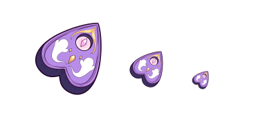
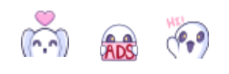
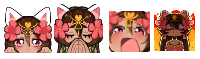

Chantelle
(Lilypaw_Art)
Animation
3D Work
Illustration
Voice Work
Writing
VTUBER
About/Contact
VTuber Rig Showcase
(Live 2D) 4 Rigs
PNGTuber Showcase
4 PNGTubers

Channel Points Icon
 
Channel Points Icon